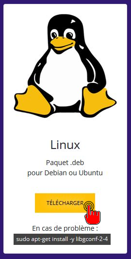
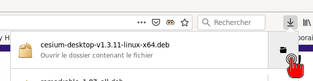
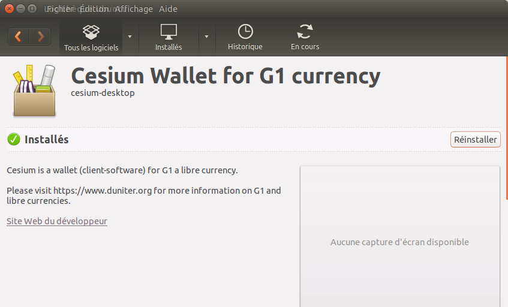

Installer Cesium Ğ1 sur GNU/Linux .deb (Debian, Ubuntu, etc.)
Cesium n’est pas inclus dans les dépôts officiels. Pour l’installer sur votre système .deb, deux méthodes :
En ligne de commande
Vous devez être connecté avec un compte ayant des droits “sudo”.
# télécharger
$ wget lien/vers/cesium
# installer (remplacer XXX par la bonne version)
$ sudo dpkg -i cesium-desktop-vXXX.deb
# s'il y a un souci à la première exécution
$ sudo apt-get install libgconf-2-4
En interface graphique (logithèque Ubuntu)
- Si votre ordinateur tourne avec Ubuntu, la logithèque est normalement disponible.
- téléchargez Cesium depuis cesium.app/telechargement

- Ouvrez le dossier de téléchargement.

- faites un double-clic sur le paquet cesium-desktop-vXXX.deb
- La logithèque va s'ouvrir. Cliquez sur "Installer"

- Cesium derait s'installer seul.
En cas de souci, installez avec votre gestionnaire de paquets favori le paquet libgconf-2-4